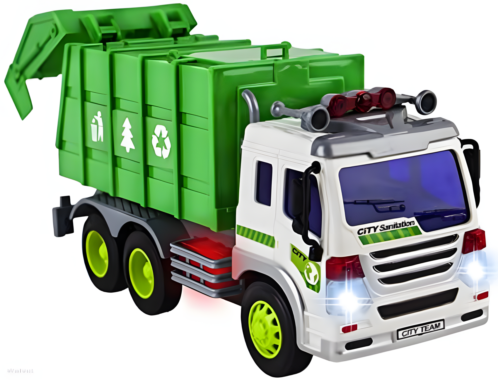

Ki vagyok én?
- Lakhely: Szeged, Magyarország
- majd ide lesz írva hány éves vagyok
- Hobbik: Programozás, játék, Android modding és minden más, ami Tech
Programozási tudás
-
C#
- objektumorientált programozás, programtervezési minták
- modern C# ismerete
- .NET
- ASP.NET
- Entity Framework
- WPF
- MAUI
- discord.Net
-
Unity
- alapok
- Input System
- objektumorientált szkriptelés
- nagy teljesítményű kód
- tesztelés
- Editor scripting
-
Java/Kotlin
- objektumorientált programozás
- Ktor (Kotlin web szerver)
- JDBC
- Jib (Docker konténerizálás)
- Gradle
- modern Kotlin funkciók ismerete